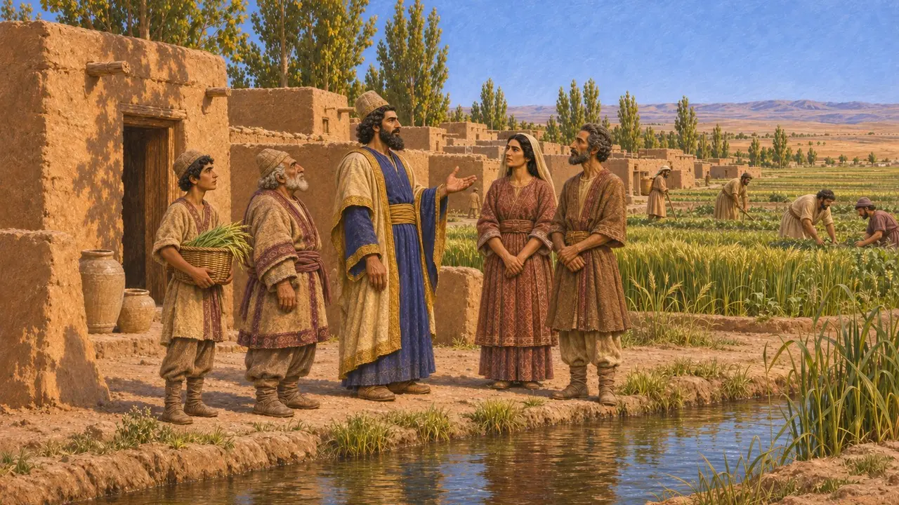
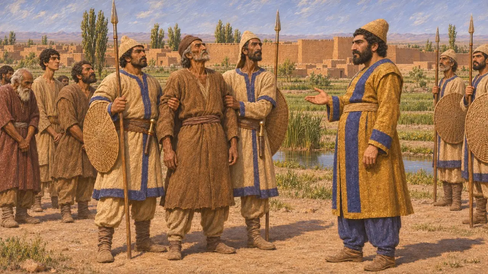
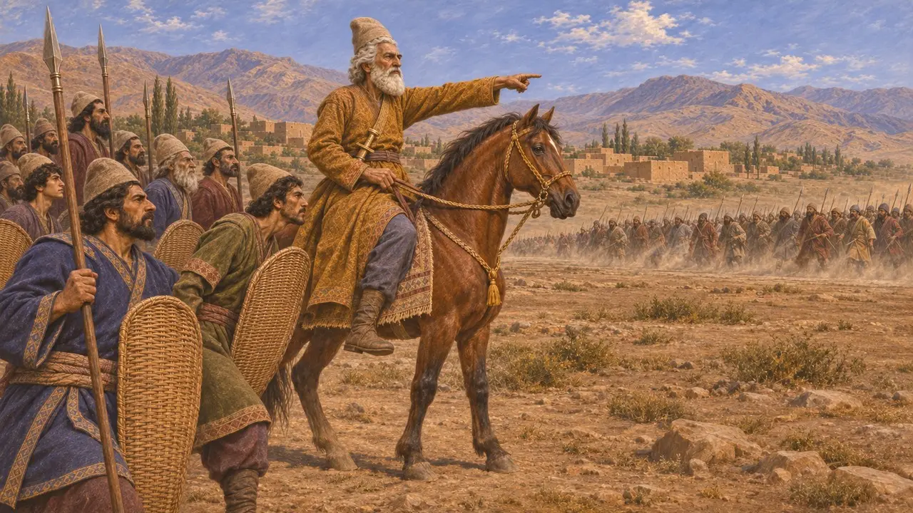
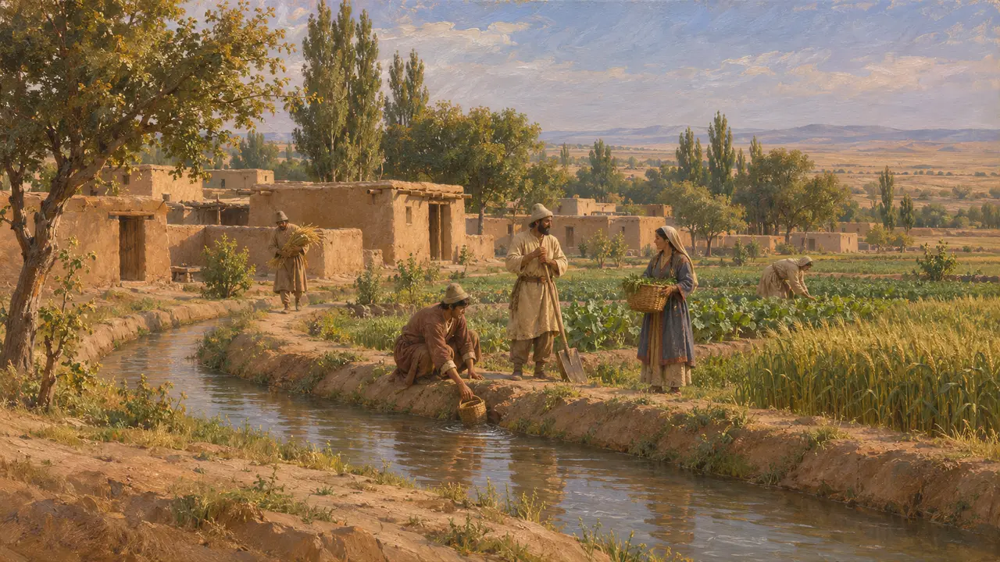
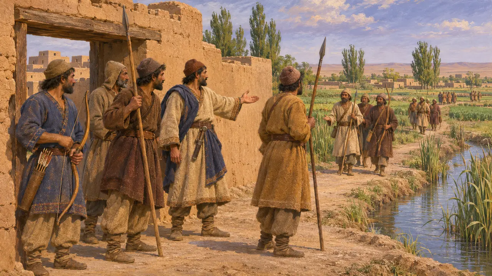

Los margianos
Pueblo del oasis del Murgab en Margiana, en el extremo oriental del imperio; revuelta de 522-521 a. C.
En el juego: Nivel 3: La Mentira
Los margianos vivían en Margiana, un país de oasis en el extremo oriental del imperio persa, en torno al río Murgab. Se les conoce sobre todo por la inscripción de Darío en Behistún, que narra su revuelta bajo un jefe llamado Frada y su derrota. Los autores griegos casi no dicen nada de ellos por su nombre.
En el juego: El juego nombra a los margianos solo en la Crónica, los decretos y las notas de campaña, y no les da una mecánica propia. La mención en las notas de una Partia «bajo Histaspes» pide cuidado: en la inscripción, Histaspes combatió a los rebeldes partos por Darío.

Margiana en la lista de tierras de Darío
En los documentosLas inscripciones de Darío nombran Margiana entre los países que le pertenecían, lo que muestra que el oasis del Murgab formaba parte del imperio en su reinado. El nombre del país en persa antiguo era Margu. A los margianos se les conoce por esas listas y por el texto de Behistún, no por un relato propio.
DB §6; DNa

La revuelta de Frada
En los documentosLa inscripción de Behistún dice que Margiana se rebeló contra Darío y que un hombre llamado Frada se convirtió en su jefe. Darío envió contra ellos a Dadarshish, un persa a su servicio y sátrapa de Bactriana. Dadarshish ganó una batalla y Frada fue capturado. La inscripción da cifras de bajas, que son afirmaciones de un rey y deben leerse como tales.
DB §§38-39

Una revuelta entre muchas
En los documentosDarío presenta el levantamiento de Margiana como parte de una sola oleada de rebeliones en 522-521, junto con Media, Elam, Babilonia, Armenia y Partia. En Partia los rebeldes se unieron al pretendiente medo Fravartish, e Histaspes, el padre de Darío, los combatió allí por el rey. En la inscripción, Histaspes es por tanto un jefe leal contra los partos, no su caudillo.
DB §§35-36

Lo que dicen los autores griegos
Relato antiguoHeródoto no nombra a los margianos en sus catálogos de tributos y del ejército, hasta donde puede saberse. Los pueblos del este aparecen allí con otros nombres, y los margianos pudieron contarse con vecinos como los bactrianos. Estrabón describe la Margiana como un oasis fértil, pero escribe siglos después de la época persa.
Herodotus 3.89-94; Strabo 11.10

Hasta dónde llegó la revuelta
En disputaLos historiadores debaten cuánto del relato de Darío sobre rebeliones simultáneas refleja una coordinación real. Algunos piensan que la inscripción agranda una serie de levantamientos locales hasta convertirlos en una sola gran crisis para justificar su toma del trono. El levantamiento margiano solo se conoce por su texto, así que su magnitud y sus causas no pueden contrastarse con otra fuente.
P. Briant, From Cyrus to Alexander, 2002
Fuentes
- Behistun inscription (DB §§6, 35-39)
- P. Briant, From Cyrus to Alexander, 2002
- Herodotus 3.89-94
- Strabo 11.10
- R. G. Kent, Old Persian: Grammar, Texts, Lexicon, 1953